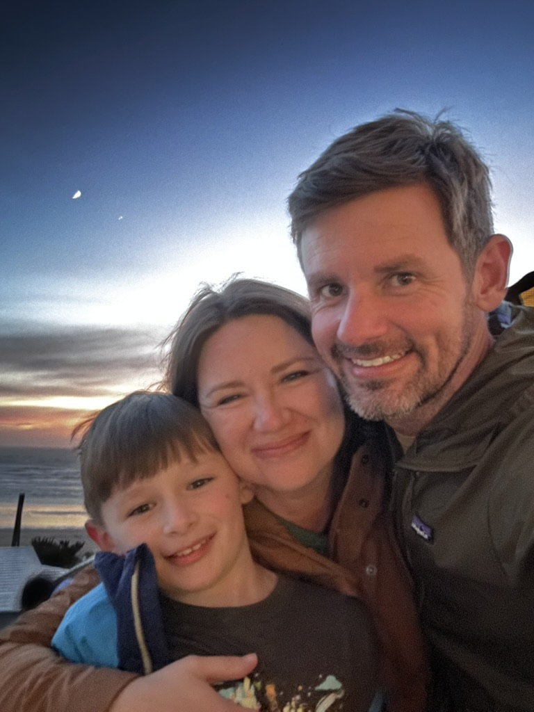

Hey, I'm Ryan
I write software for banks and credit unions. Before that, I spent 13 years keeping trucks on the road.
Software engineer at Digital Onboarding, based in Oklahoma City.
These days, fintech
Four years as an engineer, all of it in financial services. I mostly write Elixir and Phoenix LiveView, with React when it earns its spot.
-
Digital Onboarding
2025 to nowBuilding onboarding flows for banks and credit unions, and moving the old React screens over to LiveView.
-
Array
2024 to 2025Built a debt guidance product for consumers, from the first commit through launch.
-
Payitoff
2022 to 2024Student loan repayment automation. I owned the frontend flows, monthly infrastructure work, and SOC 2.
Elixir, Phoenix LiveView, React, Next.js, TypeScript, PostgreSQL, and AWS.
13 years of trucking
Before I wrote code, I ran fleets in agriculture and oil and gas. At the biggest, that was 700 drivers, 4,000 pieces of equipment, and a $35M yearly budget.
- 2019
Worked with Hitachi on its first AI fleet management software, built to catch breakdowns before they happen.
- 2021
Co-wrote Oklahoma House Bill 2325, so equipment dealers no longer need a pilot car to move implements down the road.
- 2022
Worked with Ford to drive adoption of its Ford Fleet Connect program.
Core Compliance
My side project, where the two careers meet.
Every trucking company has to keep a qualification file on each driver: CDL, medical card, driving record, road test, and more. Core Compliance keeps those files complete and flags anything about to expire, before an auditor finds it first.
Visit corecompliance.ioDriver file: J. Ortiz
- CDL
- Driving record (MVR)
- Road test
- Medical card: renew in 12 days

Off the clock
Home is Oklahoma City. Most weekends belong to these two.
We enjoy traveling, basketball, and a good cup of coffee.